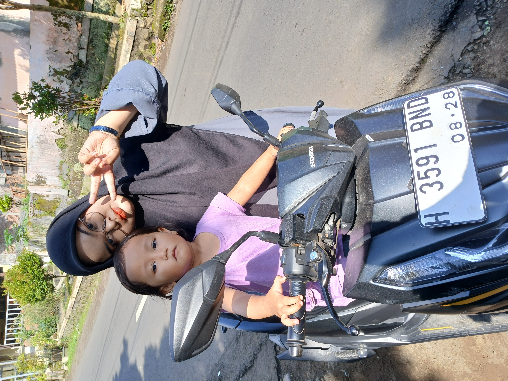

Galeri



Dia bukan sekedar manusia
Dia bisa menyamar jadi Anis, Salma, kadang ada title "adek"-nya juga. Dia bisa jadi sayuran, sebut saja Slobor Slebew. Dia bisa jadi perkakas, kalian akan mengenalnya sebagai Palugada. Kadang kalau lagi baik suka nyamar jadi Ibu peri. (katanya sih, gue belum pernah liat juga)...
Cancer, ISFP, Nastar, Sayap Naga, Gryffindor, Cucu pertama, Anak pertama, ciri-ciri penerus tahta pokoknya.
Ini cuma akal-akalan gue aja buat bikin kado yang beda dan nggak makan budget banyak. Intinya sebenernya gue bikin ini tuh buat nyelamatin dompet gue, jadi jangan baper.
Anyway, Happy Birthday! Selamat berkepala ganda, makasih udah bikin hidup gue asem-asem sepet, makasih udah gue repotin seumur hidup gue di PPAQ, udah ikut jadi babysitter Kayyis, udah jadi pendengar yang baik, pokoknya makasih.
Jangan nangis!
Dan Jangan di Judge, gue baru belajar aja bikin kek ginian.
Okay, itu aja sih, Selamat menjalani masa dewasa!
Semoga cepet nikah!!!!
Tapi sama orang yang tepat...
Semoga dietnya kali ini berhasil, semoga rejekinya lapang selapang pantat kita kalo dijadiin satu, semoga sembuh dari gangguan psikologismu, moga dapet jodoh ganteng, kaya raya, soleh, dan penyayang.(Gue juga Ya Allah...)
Yang terakhir, semoga apa yang lu tulis di note dibawah ini tersampaikan pada Allah. Aamiin...